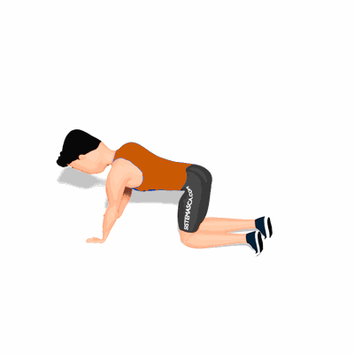

Perdigueiro Estático

O exercício tem como objetivo fortalecer os músculos do abdômen, auxiliando na estabilidade do tronco.
Ficha Técnica
Tipo: Funcional
Grupo Muscular: Abdome
Aparelho: Nenhum
Músculos: Nenhum
Como realizar
- Fique na posição de quatro apoios;
- Mantenha a cabeça alinhada com o tronco, e então estenda um braço e a perna oposta;
- O braço e a perna devem estar alinhados com o tronco e paralelos ao solo;
- Mantenha a posição por alguns segundos então repita com os membros opostos.
 RC STORE
RC STORE